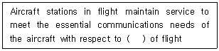
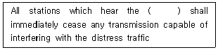
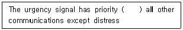
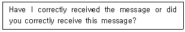
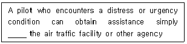
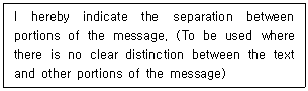
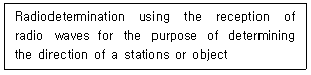
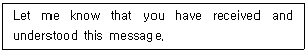
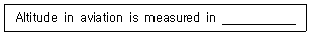

항공무선통신사 (2019-10-12 기출문제)
1과목: 전파법규
1. '항공무선통신사' 자격증을 가진 사람이 운용할 수 있는 종사범위에 해당하는(포함되는) 자격종목은?
- 전파전자통신기능사
- 무선설비기능사
- 제3급 아마추어 무선기사(전화급)
- 제2급 아마추어 무선기사
(정답률: 76%)

2. 다음 중 항공무선통신사의 종사범위가 아닌 것은?
- 항공기를 위한 무선항행국의 무선설비의 통신운용(무선전신 제외)
- 레이다의 외부조정의 기술운용
- 무선항행국 설비 중 안테나 공급전력 500(W)이상의 기술 운용
- 항공기에 개설하는 무선설비의 외부조정의 기술운용(무선전신 및 다중 무선설비 제외)
(정답률: 79%)
3. 다음 중 항공이동업무에 있어서 통신의 우선순위가 가장 우선인 것은?
- 무선방향탐지에 관한 통신
- 항공기의 안전운항에 관한 통신
- 기상통보에 관한 통신
- 항공기의 정상운항에 관한 통신
(정답률: 72%)
4. 다음 중 전파와 관련된 용어의 설명으로 옳지 않은 것은?
- 무선설비라 함은 전파를 보내거나 받는 전기적 시설을 말한다.
- 송신설비라 함은 송신장치에서 발생하는 고주파에너지를 공간에 복사하는 설비를 말한다.
- 무선탐지라 함은 무선항행 외의 무선측위를 말한다.
- 안테나 공급전력이란 안테나의 급전선에 공급되는 전력을 말한다.
(정답률: 66%)
5. 다음 중 항공기국의 조난 통보 내용이 아닌 것은?
- 우선순위 약어 “KK”
- 조난 항공기의 식별표지
- 조난 항공기의 위치
- 조난의 종류∙상황과 필요로 하는 구조의 종류
(정답률: 75%)
6. 무선전화에 의한 경보신호는 교대로 송신하는 실질적인 정현파인 가청주파수가 다른 2음으로 구성된다. 그 2음의 주파수는?
- 2,200[Hz], 1,000[Hz]
- 2,200[Hz], 1,300[Hz]
- 2,200[Hz], 1,500[Hz]
- 2,200[Hz], 1,800[Hz]
(정답률: 76%)
7. 다음 중 항공이동업무 통신에 있어 우선순위가 가장 하위인 것은?
- 기상통보에 관한 통신
- 조난통신
- 무선방향탐지에 관한 통신
- 긴급통신
(정답률: 75%)
8. 항공무선통신업무국에서 행하는 호출순서를 바르게 나타낸 것은?
- 자국의 호출부호 - “DE” - 상대국의 호출부호 – 청수주파수를 표시하는 약어
- 자국의 호출부호 – 상대국의 호출부호 - “DE” - 청수주수를 표시하는 약어
- 상대국의 호출부호 - “DE” - 자국의 호출부호 – 우선순위를 표시하는 약어
- 상대국의 호출부호 - 자국의 호출부호 - “DE” - 우선순위를 표시하는 약어
(정답률: 68%)
9. 다음 중 수신설비가 충족하여야 할 조건으로 옳지 않은 것은?
- 선택도가 적을 것
- 감도는 낮은 신호입력에서도 양호할 것
- 내부잡음이 적을 것
- 수신주파수는 운용범위 이내일 것
(정답률: 86%)
10. 다음 중 비상사태가 발생하거나 혼신방지상 필요한 경우 과학기술정보 통신부장관이 취할 수 있는 조치로 틀린 것은?
- 무선종사자 기술자격정지
- 무선국의 변경
- 무선국의 운용제한
- 무선국의 운용정지
(정답률: 78%)
11. 다음 중 전파형식 'A3E'에 대한 설명으로 틀린 것은?
- 주반송파의 변호형식이 진폭변조이고 양측파대이다.
- 주반송파를 변조시키는 신호의 특성이 아날로그 정보를 포함하는 단일채널이다.
- 송신할 정보가 전화이다.
- 4조건 부호로서 각각의 조건이 신호소자를 표시한 것이다.
(정답률: 71%)
12. 무선국 준공기한의 연장은 얼마를 초과할 수 없는가?
- 6개월
- 8개월
- 10개월
- 1년
(정답률: 66%)
13. 무선국 개설허가의 허가유효기간은 최대 몇 년의 범위 내에서 정할 수 있는가?
- 1년
- 5년
- 7년
- 10년
(정답률: 55%)
14. 다음 중 무선국의 정기검사 유효기간이 옳은 것은?
- 실용화 시험국 : 3년
- 항공국 : 5년
- 실험국 : 2년
- 헬리콥터 및 경량항공기의 의무항공기국 : 1년
(정답률: 72%)
15. 허가를 받지 아니하고 무선국을 개설하거나 이를 운용한 자에 대한 벌칙은?
- 1년 이하의 징력 또는 1천만원 이하의 벌금
- 3년 이하의 징력 또는 3천만원 이하의 벌금
- 5년 이하의 징력 또는 5천만원 이하의 벌금
- 10년 이하의 징력 또는 1억원 이하의 벌금
(정답률: 61%)
16. 다음 중 과학기술정보통신부장관이 무선국의 허가를 취소 할 수 있는 경우가 아닌 것은?
- 정당한 사유없이 계속하여 3개월 동안 무선국의 운용을 휴지한 경우
- 부정한 방법으로 무선국의 허가를 받은 경우
- 개설허가 받은 항공국을 준공검사 받지 않고 운용한 경우
- 전파사용료를 납부하지 아니한 경우
(정답률: 66%)
17. 전파를 전방향으로 발사하는 회전식 무선표지업무를 행하는 무선설비는?
- DME(Distance Measurement Equipment)
- VOR(VHF Omnidirectional radio range)
- 마아커비콘(Marker Becon)
- 글라이드패스(Glide Path)
(정답률: 80%)
18. 다음 중 전파규칙(RR)에서 규정한 항공기국의 검사에 관한 설명으로 옳지 않은 것은?
- 검사관은 조사 목적으로 무선국 허가증의 제시를 요구할 수 있다.
- 무선설비기술기준의 적합여부에 대하여 무선설비를 검사 할 수 있다.
- 검사관은 통신사의 자격증 제시를 요구 할 수 있다.
- 검사관은 통신사에게 직무에 관한 전문지식의 입증을 요구 할 수 있다.
(정답률: 77%)
19. 다음 중 전파규칙(RR)의 항공업무에서 규정한 무선전화통신사 일반 자격증 소지자(Radiotelephone Operator's General Certificate)의 업무로 옳은 것은?
- 모든 항공기국의 무선전신 업무
- 모든 항공국의 무선전신업무
- 모든 항공기국 또는 항공기지구국의 무선전화 업무
- 모든 항공국의 무선전신 업무 및 항공지구국의 무선전화 업무
(정답률: 62%)
20. 국제전기통신연합(ITU) 전권위원회의는 몇 년마다 개최되는가?
- 3년
- 4년
- 7년
- 10년
(정답률: 68%)
2과목: 기초전파공학
21. 다음 중 백색잡음의 특징으로 틀린 것은?
- 확률변수로는 가우시안 형태를 갖는다.
- 모든 형태의 전자장비와 매체에서 나타난다.
- 열 잡음온도에 따라 잡음의 크기가 달라진다.
- 동일 대역폭에서 주파수가 올라갈수록 잡음전력이 커진다.
(정답률: 40%)
22. 증폭기의 주파수 체배시 가장 많이 쓰는 증폭방식은?
- A급
- B급
- C급
- D급
(정답률: 51%)
23. DME(Distance Measuring Equipment)가 지시하는 거리의 단위는?
- NM
- SM
- km
- feet
(정답률: 52%)
24. 수신기의 성능 중 어느 정도 약한 전파까지 수신 할 수 있는 능력이 있는지를 나타내는 것은?
- 안정도
- 선택도
- 감도
- 충실도
(정답률: 55%)
25. 반송파 주파수가 118.025[MHz]인 AM 송신기에 음성주파수 1.0[kHz] ~3.0[kHz] 신호를 변조하여 송신하면 상측파대 최고 주파수(fUSB)와 하측파대 최저주파수(fLSB)는 얼마인가?
- fUSB = 118.028[MHz], fLSB = 118.022[MHz]
- fUSB = 118.026[MHz], fLSB = 118.024[MHz]
- fUSB = 118.028[MHz], fLSB = 118.024[MHz]
- fUSB = 118.026[MHz], fLSB = 118.022[MHz]
(정답률: 50%)
26. 다음 중 디지털 변조 방식에서 정보 전송상 주파수(스펙트럼)의 이용 효율이 가장 좋은 방식은?
- 16QAM(Quadrature Amplitude Modulation)
- FSK(Frequency Shift Keying)
- BPSK(Binary Phase Shift Keying)
- QPSK(Quadrature Phase Shift Keying)
(정답률: 48%)
27. 다음 중 항공정보통신시설의 단파무선통신(HF Radio)에 대한 설명으로 틀린 것은?
- 송신되는 측파대는 LSB(하측파대)를 사용하여야 한다.
- 주파수 안정도는 탑재장비의 경우 20[Hz], 지상 장비의 경우 10[Hz]를 초과하지 않아야 한다.
- 항공기국의 장치에서 안테나 전송로에 공급하는 첨두 포락선 전력은 400[W]를 초과하지 않아야 한다.
- 운용방식은 단일채널 단신방식이여야 한다
(정답률: 37%)
28. 다음 중 항공기의 계기착륙장치(ILS)와 관계없는 것은?
- 로칼라이저
- 글라이드패스
- 마아커비콘
- 레이다
(정답률: 55%)
29. DME(Distance Measuring Equipment) 장비 중 항공기에 탑재되어 질문 Pusle를 발사하는 것은 무엇인가?
- Transponder
- Radar
- Interrogator
- ATC(Air Traffic Control)
(정답률: 41%)
30. 다음 중 위성 지구국 안테나의 성능 조건에 해당하지 않는 것은?
- 저이득이어야 한다.
- 잡음 온도가 낮아야 한다.
- 고지향성을 가져야 한다.
- 광대역성을 가져야 한다
(정답률: 58%)
31. 다음 중 SSR(Secondary Surveillance Radar) 및 ATC(Air Traffic Control) 트랜스폰더에 대한 설명으로 틀린 것은?
- SSR에서 발사하는 질문 펄스를 모드 펄스(Mode Pulse)라 한다.
- SSR에서는 1,090[MHz]의 질문전파를 발사한다.
- ATC 트랜스폰더에서의 응답 펄스를 코드 펄스(Code Pulse)라 한다.
- ATC 트랜스폰더는 할당된 응답코드 및 고도를 응답한다.
(정답률: 48%)
32. VOR(VMF Omni-directional Radio Range) Station으로 비행 시 CDI(Course Deviation Indicator)가 좌로 비켜졌다면 비행하는 항로로부터 항공기의 위치는?
- 항공기는 항로 좌측에 있다
- 항로에 재 신입시키기 위하여 우선회 한다.
- 항공기는 항로 우측에 있다
- 항로에 재신입 시키기 위하여 좌선회 한다.
(정답률: 53%)
33. 121[MHz] 송신기의 주파수를 주파수 측정기로 측정하였더니 주파수 편차가 –1,280[Hz]였다면 송신기에서 발사되는 실제 주파수는 얼마인가?
- 121,001,028[Hz]
- 121,128,000[Hz]
- 121,000,000[Hz]
- 120,998,720[Hz]
(정답률: 53%)
34. 다음 중 계기의 종류와 동작원리의 연결이 잘못된 것은?
- 가동철편형 – 자기장 내에 있는 철편에 작용하는 힘
- 유도형 – 자기장과 와전류의 상호작용
- 절전형 – 충전된 두 물체간에 작용하는 힘
- 가동코일형 – 열전쌍의 열전기력을 이용
(정답률: 44%)
35. 주파수 60[MHz]인 반파장 다이폴 안테나의 실효길이는 약 몇 [m]인가?
- 1.6[m]
- 2.4[m]
- 3.6[m]
- 5.4[m]
(정답률: 36%)
36. 무지향표지시설(Non-Directional Beacon)의 주파수대와 주파수 허용 편차를 바르게 짝지은 것은?
- 190[kHz] ~ 1,750[kHz], ± 0.01[%]
- 190[kHz] ~ 1,750[kHz], ± 0.1[%]
- 108[kHz] ~ 117,975[kHz], ± 0.002[%]
- 108[kHz] ~ 117,950[kHz], ± 0.02[%]
(정답률: 42%)
37. 전기장과 자기장이 직각으로 진행하는 파동을 무엇이라 하는가?
- 펄스
- 정현파
- 파장
- 전자파
(정답률: 48%)
38. ADF의 방향탐지용으로서 야간오차를 경감하는데 사용되는 안테나는?
- 루프(Loop) 안테나
- 슬리브(Sleeve) 안테나
- 애드콕(Adcock) 안테나
- 웨이브(Wave) 안테나
(정답률: 46%)
39. 다음 중 도체의 저항에 대한 설명으로 옳은 것은?
- 도체의 길이에 비례하고 고유저항과 단면적에 반비례한다.
- 도체의 길이와 고유저항에 비례하고 단면적에 반비례한다.
- 도체의 고유저항과 단면적에 비례하고 길이에 반비례한다.
- 도체의 온도가 상승하면 저항은 감소된다.
(정답률: 44%)
40. 3[Ω]의 저항을 가지고 있는 도선에 3[A]의 전류를 흐르게 하려면 몇[V]의 전압이 필요한가?
- 1[V]
- 3[V]
- 6[V]
- 9[V]
(정답률: 57%)
3과목: 통신보안
41. 다음 중 통신보안의 목적이 아닌 것은?
- 노출된 정보의 분석에 대한 자연책 강구
- 국가기밀 누설 최소화
- 무선통신 억제
- 비밀누설가능성 사전 제거
(정답률: 54%)
42. 다음 중 통신보안 측면에서 전기통신에 관한 설명으로 틀린 것은?
- 대량으로 보급되고 있는 신속한 통신 수단이다.
- 유선의 경우 선로에 직접 접속하여 도청할 수 있는 취약점이 있다.
- 전파를 이용한 전기통신은 원칙적으로 평문송신이 불가능하다
- 전령통신에 비하여 보안도가 낮다.
(정답률: 49%)
43. 통신보안도가 높은 순서에서 낮은 순서로 옳게 나열한 것은?
- 시호통신 – 전령통신 – 우편통신 – 음향통신
- 전기통신 – 음향통신 – 전령통신 – 시호통신
- 우편통신 – 시호통신 – 음향통신 – 전기통신
- 음향통신 – 전령통신 – 시호통신 – 우편통신
(정답률: 44%)
44. 다음 통신수단 중 통신보안이 가장 취약한 통신망은?
- 보안장비를 사용하고 있는 무선통신망
- 극초단파를 이용한 무선인쇄전신
- 보안자재를 사용하는 팩시밀리 통신망
- 보안장비를 사용하는 무선전화
(정답률: 56%)
45. 국가비밀∙암호자재와 국가보안시설∙보호장비의 보호를 위하여 필요한 장소에 일정한 범위의 보호구역을 설정할 수 있다. 다음 중 이러한 보호구역에 해당되지 않는 것은?
- 제한지역
- 제한구역
- 통제구역
- 통제지역
(정답률: 40%)
46. 방향탐지란?
- 전파의 특성탐지
- 전파의 도래방향 탐지
- 전파의 송신출력 측정
- 불법전파의 주파수 확인
(정답률: 57%)
47. 다음 중 기만통신을 피하기 위한 방법으로 옳은 것은?
- 상호간에 약정된 통신확인표를 사용하여 상대방을 확인한다.
- 통신속도를 느리게 한다
- 송신출력을 약하게 한다
- 통신문의 내용을 탐지하여 혼신으로 대응한다.
(정답률: 49%)
48. 다음 통신보안 위규사항 중 불온통신에 해당되지 않는 것은?
- 간첩 및 용의자의 출현과 수사활동 사항
- 범죄행위를 목적으로 하거나 범죄행위를 교사하는 내용
- 북한 통소화의 교신행위
- 국내 침투 간첩과의 교신행위
(정답률: 54%)
49. 다음 중 현재 사용하는 자재의 정확한 취급과 관리∙유지방법으로 틀린 것은?
- 자재 기록부의 비치
- 일일 점검 실시
- 취급자를 최대한으로 증원
- 교육계획 수립 및 실시
(정답률: 58%)
50. 다음 중 통신보안상 가장 안전한 통신방법은?
- 무선전화
- 팩시밀리
- 신쇄전신
- 보안장비가 설치된 무선전화
(정답률: 56%)
4과목: 영어
51. 다음 괄호 안에 들어갈 가장 적합한 것은?

- safe and regularity
- safe and regular
- safety and regular
- safety and regularity
(정답률: 61%)
52. 다음 중 문장의 괄호 안에 들어갈 가장 적합한 것은?

- service call
- emergency call
- distress call
- stations call
(정답률: 61%)
53. 다음 문장의 괄호 안에 들어갈 가장 알맞은 것은?

- in
- under
- at
- over
(정답률: 58%)
54. 다음 문장이 의미하는 용어로 적합한 것은?

- ACKNOWLEDGE
- APPRISE
- CONFIRM
- GO AHEAD
(정답률: 56%)
55. 다음 문장의 밑줄 친 곳에 알맞은 것은?

- on contacting
- on contacting with
- by contacting
- by contacting to
(정답률: 52%)
56. 다음 문장은 어떤 용어에 대한 설명인가?

- Stand by
- Monitor
- Cancel
- Break
(정답률: 55%)
57. 조난 중인 항공기를 관제하는 기관에서 기타 무선국의 무선침묵을 지시할 때 사용되는 표현으로 가장 적절한 내용은?
- Stop transmitting
- Break Break
- Keep Silence
- Stand By
(정답률: 60%)
58. 다음 문장이 의미하는 용어는?

- Radio direction finding
- Radio bearing
- Radiotelephony network
- Radio direction-finding station
(정답률: 52%)
59. 다음 문장의 의미로 쓰이는 항공통신용어는 무엇인가?

- Roger
- Acknowledge
- Wilco
- Affirmative
(정답률: 55%)
60. “귀 국은 어디에서 어디로 가고 있습니까?”의 적합한 영문 표현은?
- Where are you bound for and where are you from?
- Where are you going and where are you coming?
- Where do you go and where did you come?
- where do you going and where is your destination?
(정답률: 62%)
61. Choose the wrong ICAO phonetic alphabet.
- D : Delta
- I : Indo
- Q : Quebec
- S : Sierra
(정답률: 71%)
62. 항공통신용어 중 조종사에게 현재 사용 중인 주파수를 계속 유지할 것을 요구할 때 사용되는 용어는?
- Hold this frequency
- Keep different frequency
- Remain this frequency
- Do not change this frequency
(정답률: 62%)
63. The communication word technically meaning “I have received all of your last transmission” is ;
- ROGER
- AFFIRMATIVE
- YES
- CORRECT
(정답률: 64%)
64. 관제사로부터 “Traffic, three o'clock one zero miles, southbound, show moving” 이라는 정보를 받았다면 당신을 기준으로 그 비행체의 위치는?
- 왼쪽 10마일
- 바로 왼쪽
- 오른쪽 10마일
- 바로 오른쪽
(정답률: 66%)
65. Aviation radio message에서 number “1”을 올바르게 발음한 것은?
- one
- wun
- wan
- win
(정답률: 63%)
66. 항공통신용어 중 '현재의 고도를 떠나 지정된 고도로 강하하여 유지하라'를 관제사가 지시할 때 사용되는 것은?
- At or above
- Expedite descend
- Change and Hold
- Descend and Maintain
(정답률: 64%)
67. 전파규칙(RR)의 목적이 아닌 것은?
- To ensure the availability and protection from harmful interference of the frequencies provided for distrss and safety purposes.
- To facilitate the efficient and effective operation of all radio communication services.
- To develop new technology of radio communication.
- To assist in the prevention and resolution of cases of harmful interference between the radio services of different administrations.
(정답률: 59%)
68. 다음 문장의 밑줄 친 부분에 알맞은 것은?

- Feet
- Miles
- Inches
- Kilometers
(정답률: 63%)
69. Most aircraft are based on fixed wings. but which one of these would be rotary wing aircraft?
- Glider
- Airship
- Aeroplane
- Helicopter
(정답률: 66%)
70. 다음 중 AIR TRAFFIC SERVICE에 포함되지 않는 것은?
- Flight Information service
- Air Traffic Advisory service
- Air Traffic Control service
- Flight Detection service
(정답률: 51%)